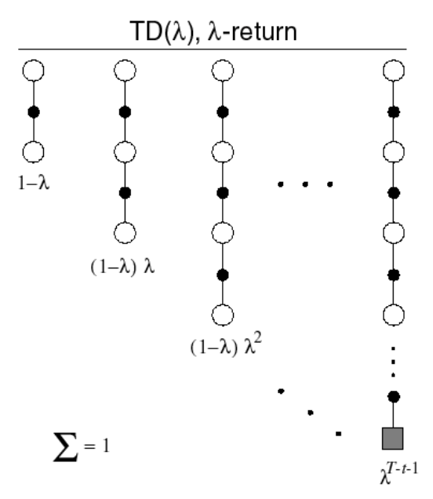

[David Silver强化学习]4·Model-Free Prediction
\[ \newcommand{\calA}{\mathcal A} \newcommand{\calP}{\mathcal P} \newcommand{\calR}{\mathcal R} \newcommand{\calS}{\mathcal S} \newcommand{\E}{\mathbb E} \]
1 Introduction
上节课我们学习了使用动态规划求解一个已知的 MDP. 我们学习了 iterative policy evaluation 来评价某个给定策略（prediction 问题），以及 policy iteration 和 value iteration 来寻找最优策略（control 问题）。
这两节课我们将探讨 model-free 方法。我们不再已知整个 \(\calP\) 矩阵和 \(\calR\) 向量，也即是说我们面对的是一个未知的 MDP，通过与环境直接交互来解决 prediction / control 问题。这节课讲 model-free prediction，下节课讲 model-free control.
我们将学习 3 种 model-free prediction 方法：Monte-Carlo Learning，Temporal-Difference Learning 和 \(\text{TD}(\lambda)\).
2 Monte-Carlo Learning
MC 直接从采样出的 episodes 进行学习，这里要求 episode 最后到达终止状态。
回顾：
Return 是未来的总奖励加权和： \[ G_t=R_{t+1}+\gamma R_{t+2}+\cdots+\gamma^{T-1-t}R_T \]
Value function 是 return 的条件期望： \[ v_\pi(s)=\E[G_t\mid S_t=s] \]
给定策略 \(\pi\)，我们可以说采样的 episode 服从 \(\pi\)，记作： \[ S_1,A_1,R_2,\ldots,S_k\sim \pi \] MC 方法的目标是学习 \(v_\pi\)，思想很简单：用经验均值来近似期望。也就是说，对于某个状态 \(s\)，我们想从它开始采样，通过计算样本 episodes 的 return 来近似 \(v_\pi(s)\).
2.1 First-Visit Monte-Carlo Policy Evaluation
一个 episode 可能会反复回到同一个状态，First-Visit MC Policy Evaluation 只考虑第一次访问那个状态的时候，它未来的 return 是怎样的。具体而言，为了估计状态 \(s\) 的 value function，我们
- 采样一条 episode，找到第一次访问状态 \(s\) 的时刻 \(t\)
- \(N(s)\gets N(s)+1,\,S(s)\gets S(s)+G_t\)
- 重复上述过程若干次
- 计算 \(V(s)=S(s)/N(s)\)，根据大数定律，当 \(N(s)\to\infty\) 时，\(V(s)\to v_\pi(s)\)
由于第 2 步涉及到了 \(G_t\)，是未来整个过程的加权奖励，因此我们必须要求 episode 最后终止，因为我们在终止之后才能计算出 \(G_t\).
2.2 Every-Visit Monte-Carlo Policy Evaluation
顾名思义，Every-Visit 把某个状态的每一次访问都纳入考量，具体来说，
- 采样一条 episode
- 对于该 episode 中每次访问状态 \(s\) 的时刻 \(t\)，\(N(s)\gets N(s)+1,\,S(s)\gets S(s)+G_t\)
- 重复上述过程若干次
- 计算 \(V(s)=S(s)/N(s)\)，当 \(N(s)\to\infty\) 时，\(V(S)\to v_\pi(s)\)
2.3 Incremental Monte-Carlo
在计算平均值的时候，不必每次都把所有数加起来，再除以个数，用一个简单的递推即可做到 \(O(1)\) 的在线更新： \[ \begin{align} \mu_k&=\frac{1}{k}\sum_{j=1}^kx_j\\ &=\frac{1}{k}\left(x_k+\sum_{j=1}^{k-1}x_j\right)\\ &=\frac{1}{k}(x_k+(k-1)\mu_{k-1})\\ &=\mu_{k-1}+\frac{1}{k}(x_k-\mu_{k-1}) \end{align} \] 这个递推式可以解释为：新的均值是原来的均值加上一个误差项 \(\frac{1}{k}(x_k-\mu_{k-1})\).
将其用在 MC 方法中，我们称作 Incremental Monte-Carlo Updates：
- 采样一条 episode \(S_1,A_1,R_2,\ldots,S_T\)
- 对于每一个 \(S_t\) 及其 return \(G_t\)，计算 \(N(S_t)\gets N(S_t)+1,\,V(S_t)\gets V(S_t)+\dfrac{1}{N(S_t)}(G_t-V(S_t))\)
- 重复上述过程
如果我们把系数 \(1/N(S_t)\) 替换为某个固定常数 \(\alpha\)，那就得到了指数移动平均的形式： \[ V(S_t)\gets V(S_t)+\alpha(G_t-V(S_t)) \] 这意味着我们会“遗忘”很早以前的结果。指数移动平均在非平稳（波动很大）的情形下很有用，我们不希望过早的历史信息对现在仍有相同比重的影响。
3 Temporal-Difference Learning
3.1 \(\text{TD}(0)\)
TD 也通过采样、与环境直接交互学习，但与 MC 不同的是，TD 不需要采样完整的、最后终止的 episode，它使用 bootstrapping 来估计。
一个最简单的 TD 算法 \(\text{TD}(0)\) 如下：
采样一条 episode
使用 estimated return 来在线更新 value function： \[ V(S_t)\gets V(S_t)+\alpha({\color{purple}{R_{t+1}+\gamma V(S_{t+1})}}-V(S_t)) \] 其中 \(R_{t+1}+\gamma V(S_{t+1})\) 称为 TD target，\(\delta_t=R_{t+1}+\gamma V(S_{t+1})-V(S_t)\) 称作 TD error.
重复上述过程
可以看见，与 Incremental MC（的指数移动平均形式）相对比，\(\text{TD}(0)\) 用一个带有估计性质的 \(R_{t+1}+\gamma V(S_{t+1})\) 代替了真实的 \(G_t\)，这就是 bootstrapping 的含义——用自己手上的估计值而非真实值。
David 在课堂上举了一个有趣的例子说明 TD 相比 MC 的好处。考虑一个开车的场景，在某一个 episode 中，我们与对面驶来的车擦肩而过——差点就车祸但是没有车祸。如果使用 MC 方法，我们不会得到任何负面的反馈，因为车祸毕竟没有发生，但使用 TD 方法，我们将期望车祸很有可能发生，因而会立刻更新 value function，而不是一定要等到挂掉之后才能更新。
到这里，我们可以看到——TD 可以在得到最终结果之前学习，即可以在线学习；MC 必须等到一个 episode 结束后、return 被计算出来后才能更新；TD 可以在无法到达终止状态的环境中学习，MC 不可以。
3.2 Bias / Variance Trade-off
Return \(G_t\) 是 \(v_\pi(S_t)\) 的无偏（unbiased）估计（因为后者本身就是前者的期望），真实的 TD target \(R_{t+1}+\gamma v_\pi(S_{t+1})\) 也是 \(v_\pi(S_t)\) 的无偏估计，但是 TD target \(R_{t+1}+\gamma V(S_{t+1})\) 是有偏（biased）的。
类似于方差和样本方差的区别。
另一方面，由于 \(G_t\) 依赖于后续发生的动作、转移、奖励等等，有很多种可能，而 TD target 只考虑下一步的可能情形，因此前者将比后者具有更大的方差。
- MC 高方差，零偏置
- 好的收敛性
- 对初始值不敏感
- 简单，易于理解
- TD 低方差，有偏置
- 通常效率更高
- \(\text{TD}(0)\) 收敛到 \(v_\pi(s)\)
- 对初始值更敏感
Random Walk Example
为了直观对比 MC 和 TD 的收敛速度，我们考虑下面这个随机游走的例子。
从 C 点开始随机游走，如果终止在右边获得 1 的奖励，终止在左边获得 0 的奖励。
假设我们把所有状态的 value function 都初始化为 0.5，随着采样数量的增加，value function 确实逐渐逼近真实值：
不同的方法（MC v.s. TD）、不同的步长 \(\alpha\)，有着不同的收敛速度：

3.3 Batch MC and TD
如果我们无法不断地采样，手上只有一批有限数量的样本，那么根据这批样本做 MC 或 TD，能收敛到正确结果吗？
举一个简单的例子，假设 MDP 只有两个状态：A 和 B，我们手上有 8 个 episodes：
- A, 0, B, 0
- B, 1
- B, 1
- B, 1
- B, 1
- B, 1
- B, 1
- B, 0
使用 MC 方法，我们将得到 \(V(A)=0,\,V(B)=0.75\)；而使用 TD 方法，我们将得到 \(V(A)=0.75,\,V(B)=0.75\).
可以看出，本质上来说，
MC 缩小 value function 和观察到的 return 之间的均方误差
\(\text{TD}(0)\) 相当于先根据 episodes 建立起最符合这些样本的 MDP，然后解这个 MDP
因为 TD 首先建立 MDP 模型，它更能够去利用 Markov property，在 Markov environments 下效率更高；而 MC 忽视了 Markov property，在 non-Markov environments 下效率更高。
3.4 Unified View
Okay，现在我们将 MC, TD 和 DP 解 MDP 总结一下：
MC 会采出一条到达终止状态的 episode，然后更新沿途经过的状态；TD 每次更新只需向前走一步，用下一步的 value function 更新当前状态；而 DP 建立在我们已知整个 MDP 的基础上，我们也只向前走一步，但是严格按照概率对所有的可能进行递推计算。
按照是否 sample，MC 和 TD 被划分为一类，DP 被划分为一类；按照是否 bootstrapping（用自己手上的值更新自己，而非真实值），TD 和 DP 被划分为一类，MC 被划分为一类。因此我们可以画一个 2D 的分类图：
我们很容易注意到，有一个角落是没有讲过的——既不 sample，也不 bootstrapping。这其实对应着最暴力的穷尽搜索。但是我们还应注意到，在是/否 bootstrapping 之间，其实存在灰色地带——我们往前多走几步，但是又不走到头，称之为 \(n\)-step TD.
4 \(\text{TD}(\lambda)\)
4.1 \(n\)-step TD
上一节的最后已经解释了 \(n\)-step TD 的基本思想：
反映在公式中，即是：
\[ G_t^{(n)}=R_{t+1}+\gamma R_{t+2}+\cdots+\gamma ^{n-1}R_{t+n}+\gamma^nV(S_{t+n}) \] 更新方式变为： \[ V(S_t)\gets V(S_t)+\alpha(G_t^{(n)}-V(S_t)) \] 一个自然的问题就是，向前走的步数 \(n\) 取多大最好呢？面对不同的问题，最好的 \(n\) 值往往不同，我们需要一个算法帮助我们确定最好的 \(n\) 值。
一个简单的想法是，既然我们不知道哪个 \(n\) 最好，那就干脆取多个 \(n\) 值算平均，这样至少保证结果不会很差，比较稳定。当然，实践中我们需要一个更高效的算法，这就引入了 \(\text{TD}(\lambda)\).
4.2 Forward View of \(\text{TD}(\lambda)\)
我们对所有 \(n\) 值按照几何级数做平均，称之为 \(\lambda\)-return：

当然，最后终止的那一步不再是几何级数，而是 \(1\) 减去之前所有的系数之和。这里为了简便起见，没有把这一点体现在公式中： \[ G_t^\lambda=(1-\lambda)\sum_{n=1}^\infty\lambda^{n-1}G_t^{(n)} \] 更新方式变为： \[ V(S_t)\gets V(S_t)+\alpha (G_t^\lambda-V(S_t)) \] 当 \(\lambda=0\) 时，就是上一节的 \(\text{TD}(0)\)；当 \(\lambda=1\) 时，就是 Monte-Carlo.
为了计算 \(G_t^\lambda\)，我们需要像 MC 一样采样完整的 episode，将每一步的 \(G_t^{(n)}\) 计算出来，然后加权求和。这种方法称作 forward view：
4.3 Backward View of \(\text{TD}(\lambda)\)
Forward view 更多是理论上的贡献，鉴于它具有 MC 一样的缺点，我们更常采用 backward view.
首先我们引入一个概念——eligibility traces. 它类似于神经元受刺激后的激活状态——受刺激的瞬间激活值拉高，然后随时间推移逐渐降低，直到下一次刺激。具体而言，我们对每一个状态 \(s\) 维护一个值 \(E_t(s)\)，满足： \[ \begin{align} &E_0(s)=0\\ &E_t(s)=\gamma\lambda E_{t-1}(s)+\mathbf 1(S_t=s) \end{align} \] 在时刻 \(t\)，如果没有进入状态 \(s\)，则 \(E_t(s)\) 减少到 \(\gamma\lambda\) 倍的上一时刻值；否则，\(E_t(s)\) 有一个瞬时的 \(1\) 的增加：
利用 eligibility traces，我们在每个时刻对所有状态依 TD-error \(\delta_t\) 和 \(E_t(s)\) 按比例对 \(V(s)\) 做更新： \[ \begin{align} &\delta_t = R_{t+1}+\gamma V(S_{t+1})-V(S_t)\\ &V(s)\gets V(s)+\alpha\delta_tE_t(s) \end{align} \]
当 \(\lambda=0\) 时，\(E_t(s)=\mathbf 1(S_t=s)\)，因此我们只对当前进入的这个状态做更新 \(V(s)\gets V(s)+\alpha\delta_t\)，这等价于 \(\text{TD}(0)\).